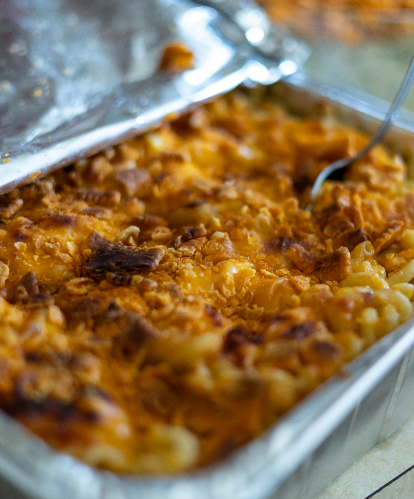

Baked Mac 'n' Cheese

Ingredients
For the Pasta
For the Cheese Sauce
- 4 tablespoons unsalted butter
- 1/4 cup all-purpose flour
- 4 cups whole milk (or a mix of milk and heavy cream)
- 1 teaspoon dijon mustard (Optional)
- 1 teaspoon garlic powder
- 1/2 teaspoon salt
- 1/4 teaspoon black pepper
- 3 cups shredded sharp cheddar cheese
- 1 cup shredded mozzarella or gruyere
- 1/2 cup grated parmesan
For the Topping
- 2 tablespoons unsalted butter. melted
- 1/4 cup grated parmesean or cheddar or mozzarella/gruyere
Steps
- Bring a large pot of salted water to a boil. Cook the pasta until al dente according to package instructions. Drain and set aside.
- In a large saucepan, melt the butter over medium heat. Whisk in the flour and cook for 1-2 minutes, stirring constantly, until it forms a smooth paste (roux).
- Gradually pour in the milk while whisking to prevent lumps. Continue cooking and stirring for about 5-7 minutes, or until the sauce thickens.
- Reduce the heat to low and stir in Dijon mustard, garlic powder, salt, and pepper. Gradually add the cheddar, mozzarella (or Gruyère), and Parmesan, stirring until the cheese melts into a smooth sauce.
- Remove the sauce from heat and fold in the cooked pasta until evenly coated.
- Preheat your oven to 375°F (190°C). Lightly grease a 9x13-inch baking dish. Transfer the mac and cheese mixture into the dish, spreading it out evenly.
- In a small bowl, mix the breadcrumbs with melted butter and Parmesan (if using). Sprinkle the mixture evenly over the mac and cheese.
- Bake in the preheated oven for 20-25 minutes, or until the topping is golden and the sauce is bubbly. For extra crispiness, broil for 1-2 minutes at the end (watch closely to avoid burning).
- Let the mac and cheese cool for a few minutes before serving. Garnish with chopped parsley if desired.
Notes
- Mix and match with cheeses like Havarti, Monterey Jack, or Fontina for unique flavors.
- Include cooked bacon, diced ham, sautéed mushrooms, or steamed broccoli for a heartier dish.
- Assemble the mac and cheese up to a day in advance, refrigerate, and bake just before serving.
Back to Home